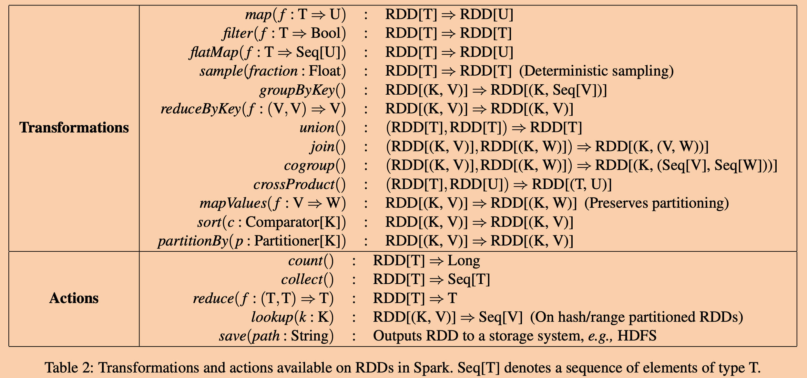

这篇文章是我阅读这篇论文过程中做的笔记，以及一些自己的思考。
简介
Spark是由当时计算框架无法高效处理的两个问题所驱动设计：迭代算法和交互式数据挖掘工具。
相比于很有名的MapReduce，Spark有如下优势：
- 由于计算过程会尽可能的利用内存，性能上会有大大提升，即使在内存放不下数据的情况下也至少不会比MapReduce慢。
- 对于MapReduce，只能通过将数据写入一个外部可靠存储系统来在两个MapReduce任务之间重用数据，只会造成巨大的的I/O消耗。而Spark能够让程序员控制将数据在内存中缓存（或者写入存储系统）来在任务间共享，避免了冗余I/O消耗。
- Spark能够更高效表达更多的计算模式，换句话说是Spark能解决的问题是MapReduce能处理的问题的超集。
- Spark对计算过程提供了（可控的）容错性，能够通过缓存中间结果避免任务失效时从头重算整个计算过程，而MapReduce则往往需要更多计算和IO来进行恢复。
Spark使用Resilient Distributed Datasets（RDDs）来抽象内存中的是数据（目前已经转向DataFrame）实现以上特性。
和其他分布式全局共享内存、key-value存储，数据库等应用提供的细粒度的操作相比，RDDs提供的是更粗粒度的操作（transformation），比如map、fileter和join等，这些操作会同时对大量数据应用相同的操作。这使得Spark能够通过写log的方式只将这些操作（而非像上述系统需要在log中记录数据）保存下来，以此构建一个操作序列来高效的提供容错性。当计算过程中一个RDD丢失时，只需要根据log重放该RDD对应的操作历史即可重新得到。当然Spark的默认前提是输入是来自于可靠高容错的存储服务比如HDFS。
Resilient Distributed Datasets (RDDs)
RDD是一个只读的，分片的数据集合，只能通过对：
- 可靠存储服务
- 或者，其他RDD
进行一些确定操作而得到。
Spark API
这些返回值为RDD的操作被称为转换（transformation），转换被调用时，并不是立即执行的，而是仅仅在操作序列中log一条。
积累的转换只有每次在遇到action的时候才会一起执行，action是一些应用于RDD的操作，但是返回值确实一个数值或者一些导出到存储系统的数据。
正是因为转换的这种惰性执行策略，使得Spark能够对操作序列进行分析和优化，比如可以让部分操作流水线执行，这样后面的操作不用等待前面操作完全结束再开始。

上图是Spark提供的接口：
Transformation：
map：对RDD每个数据执行指定函数，该函数的返回值替换原来数据。filter：对所有数据对执行指定函数，仅保留返回true的RDD子集。flatMap：map的函数是返回一个数据，但是flatMap的函数可以返回多个数据，这使得RDD内条目的数量往往会变多。sample：类似于map，但是会随机从父数据集中得到一个子集。虽然是随机操作，但是RDD会存储生成随机数用的种子，这使得未来恢复数据再次执行时会得到相同的输出。groupByKey：只能使用于kv数据对类型的RDD。将RDD中的数据对根据相同的key进行整合，得到的RDD的key将是无重复的。reduceByKey：只能使用于kv数据对类型的RDD。遍历RDD中key相同的数据对，指定的函数接收两个参数，第一个参数为上一次执行的返回值，第二个参数为本轮执行的数据对的value。union：将两个RDD合并为一个RDD。注意并不去重。join：类似mysql中的left join，将两个RDD根据某个关联函数合并。cogroup：将两个RDD各自groupByKey之后的结果再进行一次groupByKey。crossProduct：RDD的笛卡尔积mapValues：只能使用于kv数据对类型的RDD。等价于对所有的值的集合使用map。sort：略partitionBy：根据用户指定函数进行数据分片。默认使用hash。
Actions：
count：返回元素数量。collect：返回RDD对应的元素。reduce：遍历RDD中所有数据，指定的函数接收两个参数，第一个参数为上一次执行的返回值，第二个参数为本轮执行的数据对的value。lookup：返回RDD中某个key对应的数据。save：将RDD输出到存储系统的指定路径。
表示RDD
RDD的表示方式需要能够支持将各种操作进行任意组合，并且还需要能够表示出RDD之间的依赖关系。
Spark使用如下信息来表示一个RDD：
- 一组组成当前RDD的分片数据
- 当前RDD对父RDD的一组依赖。
- 一个基于父RDD来计算得到当前RDD的函数。
- 关于分片模式的元数据。
- 关于分片存放信息的元数据。

比如，RDD会将HDFS上一个文件的每个文件块作为一个分片，并且记录各个文件块的位置。同时如果对该RDD执行map转换的话，那么新生成的RDD会是相同的分区，且其分区的信息是本地父分区map执行的结果。
Spark将RDD的依赖分为两种：
narrow dependency：父RDD的每个分片仅仅被最多一个子RDD的分片使用。wide dependency：父RDD的部分分片可能被多个子RDD的分片所依赖。
例如，
map将导致一个narrow dependency，而join将导致一个wide dependency（除非父RDD都事先经过hash-partition）。其实本质上，这个依赖描述的就是一个操作是否会导致父分片在网络上传输进行数据重组（shuffle）。
wide dependency需要进行shuffle，而narrow dependency则是往往在本地执行。之所以RDD要分类依赖关系是因为以下两个原因：
narrow dependency允许在本地对所有的父分片进行流水线执行。比如一个先执行map再执行filter的操作序列，可以在map计算完一个元素后直接将结果传给filter，而不用等待map任务完全结束后再开始filter任务。而与之相反，wide dependency则需要所有的父分片都准备就绪以后，在节点间进行数据重组。- 当一个节点失效后，
narrow dependency可以更高效的恢复。因为对于narrow dependency，只需要依赖更少数量的父分片就可以重新计算得出。而对于wide dependency则可能需要依赖整个父RDD。这种差异在考虑到内存管理中的驱逐（evict）时会被放大，因为每个节点上内存资源是有限的，极端情况下，丢失的分片所有依赖的父分片都已经被驱逐出内存，那么wide dependency可能会需要将所有父分片全部从源头计算一遍（可以利用persist缓解）。
RDD vs DSM
在DSM（Distributed Shared Memory）系统中，应用允许在一个全局的地址空间内读写任意位置。
RDD和DSM的主要区别在于：
- RDD只允许通过粗粒度的转换操作来创建。而DSM则允许随机细粒度读写。RDD的这种限制使得RDD在失效恢复时更加高效，因为他仅仅需要操作序列历史就可以进行恢复，而DSM为了容错一般会提供检查点机制（checkpoint），这种机制会消耗大量的存储空间。另外，RDD只需要重计算部分分区，且可以通过将各个分片恢复任务分派给不同机器，从而进行并行恢复。
- 因为所有的RDD一旦创建就不可再更改，所以对于那些计算较慢的节点，可以同时启用备用任务且不需要考虑并发控制的问题。而DSM如果要同时执行备用任务的话，会有并发控制的问题，因为他们修改的是同一块内存空间。
- RDD的粗粒度操作能够让调度器基于数据局部性来调用任务，以此来提升性能。
- RDD在系统没有足够内存的时候，能够自动降级，将数据存储到磁盘上，此时性能将和MapReduce的之类计算系统类似。

例子：pageRank
驱动（driver）代码。

RDD操作序列（lineage）图。

可以看到Spark会将循环迭代操作变成一个很长很长的操作系列图。
为了避免发生失效时，因为过长的操作系列图而导致长时间的重计算，Spark提供了一个接口
persist，能够让用户选择将一个RDD存储到存储服务中，比如这个例子中，如果迭代次数提高可以考虑将ranks每隔几轮迭代就persist一次。实现
论文作者通过大概14000行Scala代码实现的Spark。Spark能够使用Hadoop现有的数据插件API从任何Hadoop输入源中读取数据（比如HDFS，HBase等）。
任务调度
每当用户调用一个action时，调度器会通过该RDD的操作序列图构建一个有向无环图（DAG），图中的节点为一个个需要执行的阶段（stage）。

每个执行阶段会包含尽可能多的可以流水线执行的操作，即互相是
narrow dependency的分片计算任务。每个阶段的边界为wide dependency导致的数据重组操作（shuffle）。调度器会根据数据的局部性来进行分配任务。如果一个计算任务需要的分片已经在某个节点的内存中了，那么就将任务分配给该节点。另外，如果一个任务显式声明了期望的执行位置（比如，一个HDFS文件），那么就将任务分配给指定节点。
对于
wide dependency，Spark目前会在持有父分区的节点上将中间结果持久化，以此来简化失效恢复过程。解释器集成
Spark基于Sacala的交互式shell也提供了一个交互式的shell。
Scala解释器一般来说对用户输入的每行输入都会创建一个类并编译加载进JVM，并且执行该类的函数。这个生成的类包含了一个单例的对象，该对象包含了该行中所包含的变量或者函数。
比如，用户输入了如下两行代码：
1
2var x = 5
println(x)第一行执行结束之后，会生成一个Line1的类，并且导致第二行编译成
println(Line1.getInstance().x)。Spark修改Scala的解释器的以下两点：
- Class shipping：在用户输入一行代码之后，将生成的类的字节码通过HTTP发送给worker。
- Modified code generation：一般来说每行代码创建的单例对象是通过调用其类的静态方法来访问的。这使得当未来序列化一个对象时该引用了之前的变量，java不会把将对应的实例也一起发送过去。所以Spark将其修改了代码的生成，将其变为了直接访问对象实例，而非通过静态方法来间接访问。

内存管理
Spark提供了三种选项来存储需要持久存在的RDD：
- 以java对象的方式存在内存。
- 以序列化后的java对象的方式存在内存。
- 存在磁盘上。
因为JVM能够直接访问，所以第一种方式性能最快，第二种则更加节省内存，第三种则在数据量大到内存放不下的时候可以使用，避免重新计算花费太大的代价。
为了管理有限的内存资源，Spark采用LRU策略来管理内存。